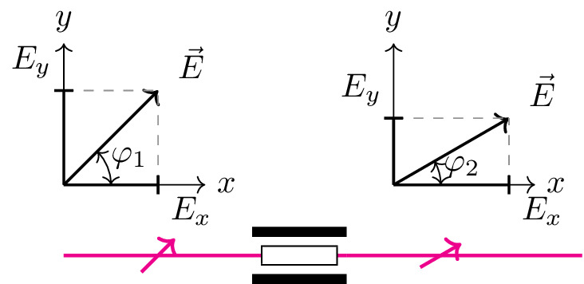

pre.tex
\documentclass[tikz]{standalone}\input{pre.tex}\begin{document}\begin{tikzpicture}[
media/.style={font={\footnotesize\sffamily}},
wave/.style={
decorate,decoration={snake,post length=1.4mm,amplitude=2mm,
segment length=1mm},thick},
interface/.style={
postaction={draw,decorate,decoration={border,angle=-45,amplitude=0.3cm,segment length=1.3mm}},
},
]
% \begin{scope}[xshift=0cm]
% \draw (0,0.5) rectangle node[above, yshift=1em] {1} ++(1,0.5);
% \end{scope}b
% \begin{scope}[xshift=-0.5cm]
% \draw (0,0.5) rectangle node[above, yshift=1em] {1} ++(0.5,0.5);
% \end{scope}
% \begin{scope}[xshift=0.5cm]
% \draw (0,0.5) rectangle node[above, yshift=1em] {2} ++(0.5,0.5);
% \end{scope}
% \draw[magenta, line width=1pt] (0,0.75) -- ++ (0.5,0);
\draw[magenta, line width=1pt] (1,0.75) -- ++ (1,0);
\draw[magenta, line width=1pt] (2,0.75) -- ++ (1,0);
\draw[magenta, line width=1pt] (4,0.75) -- ++ (2.5,0);
% \draw[fill=white, dashed] (2,0.75) circle (0.25);
\xdef\angle{45}
\draw [-,magenta, line width=1pt] (2,0.75) -- ++({180+\angle}:0.25);
\draw [->,magenta, line width=1pt] (2,0.75) -- ++({\angle}:0.25);
% \draw[draw=none] (0,0) -- ++(6.75,0);
\begin{scope}[xshift=1cm, yshift=1.5cm]
\draw[black,->, thick] (0,0) -- (1,1) node[above, xshift=1em] {$\vec{E}$};
\draw[dashed, black!50] (1,0) -- (1,1);
\draw[dashed, black!50] (0,1) -- (1,1);
\draw[black,->, thin] (0,0) -- (1.5,0) node [right] {$x$};
\draw[black,->, thin] (0,0) -- (0,1.5) node [above] {$y$};
\draw[black,-,thick] (0,0) -- ++(1,0);
\draw[black,-,thick] (0,0) -- ++(0,1);
\draw[black,thick] (1,-.1) node[right,yshift=-0.5em] {${E}_x$} -- ++(0,0.2);
\draw[black, thick] (-.1,1) node[above, xshift=-0.7em] {${E}_y$} -- ++(0.2,0);
\path (45:{sqrt(2)}) coordinate (a) node[right] {} -- (0,0) coordinate (b) node[left] {} -- (1,0) coordinate (c) node[above right] {};
\pic["$\varphi_1$",draw=black,<->,angle eccentricity=1.5,angle radius=0.5cm] {angle=c--b--a};
\end{scope}
\begin{scope}[xshift=4.5cm, yshift=1.5cm]
\draw[black,->, thick] (0,0) -- (30:{sqrt(2)}) node[above, xshift=1em] {$\vec{E}$};
\draw[dashed, black!50] (0,{1/2*sqrt(2)}) -- (30:{sqrt(2)});
\draw[dashed, black!50] ({sqrt(3)/2*sqrt(2)},0) -- (30:{sqrt(2)});
% \draw[dashed, black!50] (0,1) -- (30:{sqrt(2)});
\draw[black,->, thin] (0,0) -- (1.5,0) node [right] {$x$};
\draw[black,->, thin] (0,0) -- (0,1.5) node [above] {$y$};
\draw[black,-,thick] (0,0) -- ++({sqrt(3)/2*sqrt(2)},0);
\draw[black,-,thick] (0,0) -- ++(0,{sqrt(1)/2*sqrt(2)});
\draw[black,thick] ({sqrt(3)/2*sqrt(2)},-.1) node[right,yshift=-0.5em] {${E}_x$} -- ++(0,0.2);
\draw[black, thick] (-.1,{1/2*sqrt(2)}) node[above, xshift=-0.7em] {${E}_y$} -- ++(0.2,0);
\path (30:{sqrt(2)}) coordinate (a) node[right] {} -- (0,0) coordinate (b) node[left] {} -- (1,0) coordinate (c) node[above right] {};
\pic["$\varphi_2$",draw=black,<->,angle eccentricity=1.5,angle radius=0.5cm] {angle=c--b--a};
\end{scope}
\begin{scope}[xshift=3cm]
% \draw[fill=white, dashed] (2,0.75) circle (0.25);
\xdef\angle{30}
\draw [-,magenta, line width=1pt] (2,0.75) -- ++({180+\angle}:0.25);
\draw [->,magenta, line width=1pt] (2,0.75) -- ++({\angle}:0.25);
\end{scope}
\begin{scope}[xshift=3cm, yshift=0.75cm]
\draw[line width=3pt] (0,-0.25) -- ++ (1,0);
\draw[line width=3pt] (0,0.25) -- node[above, yshift=0.2em] {} ++ (1,0);
\draw[magenta, line width=1pt] (0,0) -- (1,0);
\draw[fill=white] (0.1,-0.1) rectangle ++ (0.8,0.2);
% \draw[magenta!30, line width=1pt] (0.1,0) -- (0.9,0);
\end{scope}
% \begin{scope}[xshift=3cm]
% \draw (0,0.5) rectangle node[above, yshift=1em] {} ++(1,0.5);
% \end{scope}
\end{tikzpicture}\end{document}